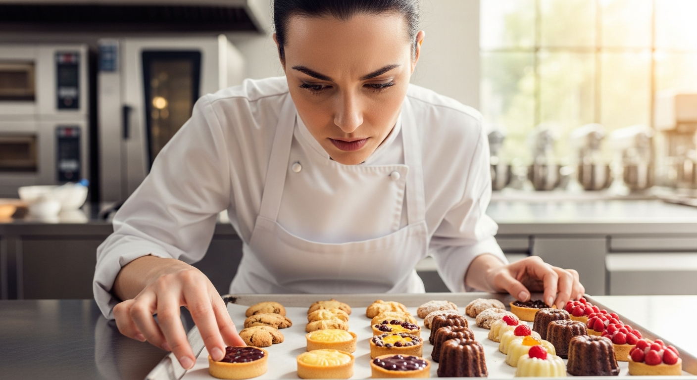

Chef Chloe - 行政主廚
Chloe 擁有藍帶廚藝學校的深厚底蘊，對甜點有著無比的熱情與堅持。她擅長將季節水果融入法式甜點，創造出令人驚豔的味覺饗宴。每一道甜點都是她精心設計的藝術品。
Chloe 擁有藍帶廚藝學校的深厚底蘊，對甜點有著無比的熱情與堅持。她擅長將季節水果融入法式甜點，創造出令人驚豔的味覺饗宴。每一道甜點都是她精心設計的藝術品。
Ryan 專注於歐式麵包與常溫點心的研發。他每天清晨開始揉製麵糰，堅持長時間低溫發酵，只為了呈現最純粹的麥香。他的可頌與瑪德蓮是店裡的人氣必點。
Mia 負責常溫蛋糕與餅乾的製作，她對細節的要求極高，確保每一片餅乾都能達到完美的酥脆度。

Leo 擁有SCA國際咖啡師證照，能為您調製出最適合搭配甜點的咖啡飲品。